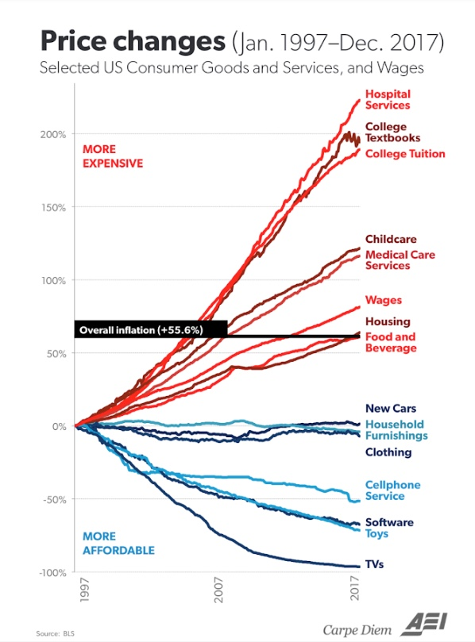
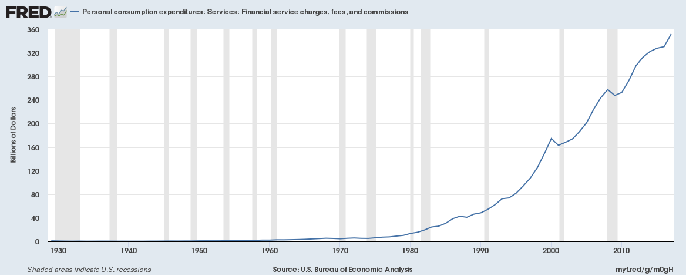
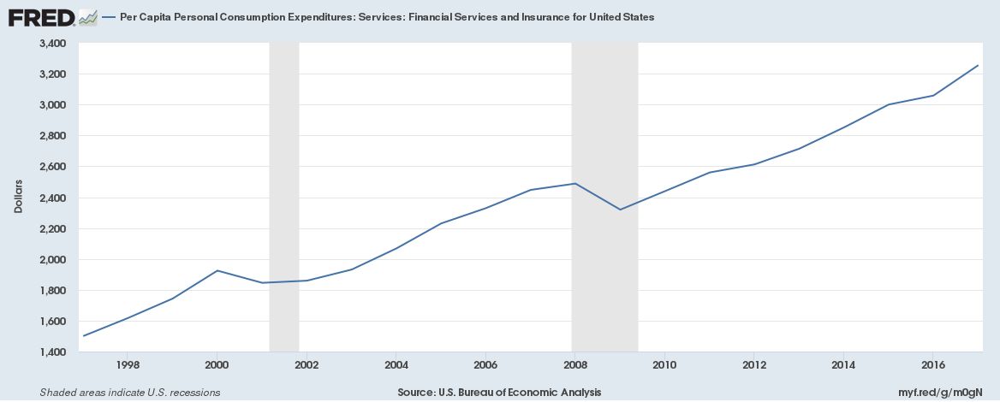

Is Finance No Longer in Charge?
February 27th, 2019
I started writing this back in November when Marginal Revolution first shared the following post: Is biology now in charge? The original essay, written by Laura Deming, is linked here. Here’s a key excerpt:
“One of my biggest personal fears is working in the wrong field to achieve the goal I care about. If you were around pre-1900s, and wanted to contribute to biology, you should have been a physicist (Robert Hooke, a physicist discovers the first cell, making a better microscope is a major driver of progress). In which field should you work to maximize progress in biology today?”
As Laura elaborates, in the first half of the 20th century, most advances in Biology actually came from the field of Physics – not Biology itself. However, at the century’s halfway point – around the 1950s – this flipped: most advances within Biology came from the field of Biology itself. The field became, in Laura’s words, “self-reinforcing.”
I would argue that we are witnessing the inverse in financial services today. While finance once drew its innovations from itself, it is now increasingly drawing its innovations from the world of engineering.
No technology was required to create the leveraged buyout; its creation can be attributed to a group of enterprising financiers and particularly adventurous lenders. Asset-backed securities? Similar story. Sure, technology can help to evaluate mortgage-backed securities and other asset-backed products en masse. But no technology was required to create them in the first place. They’re paper contracts. Same with derivatives contracts, which trade in large volumes near-automatically today, but existed solely on paper at first.
Finance today tells a different story. if you are a consumer of financial products, as we all are, this change is a welcome and exciting one.
The financial services industry, after all, relies on fee-based revenues. Banks predominantly make money by borrowing capital at a low rate (deposits) and then lending it out at a high rate (loans). This has historically been a great business — one with a negligible cost of goods sold. [1]
However, in the contemporary world of fees, we’re (fortunately!) witnessing a race to the bottom. Online banking and its related features have become ubiquitous. Now, companies are forced to compete on financial merit. How? By shaving off back-office costs required to maintain accounts. How? Technology.
Here’s a great example:
If you hold a savings account with Bank of America and you are lucky enough to qualify for their “Platinum Honors Tier,” your patronage will kindly be rewarded with 0.06% annual interest on your balance. However, if you bank with Goldman Sachs’s Marcus, you will earn 2.25% annual interest. You will earn 38x more with Marcus. Would you be content with paying 38x more for anything else in your life?
Goldman and BoA obviously have different objectives here. Savings accounts are a money-maker for BoA, while Goldman is clearly hoping to draw customers to their newly-formed consumer bank, Marcus. (I’m very excited about Marcus. [2] I may elaborate on the reasons for why in a future post).
Marcus had the luxury of starting from scratch. With no technical debt to be paid off at inception, it could build best-in-class infrastructure to support a 21st century digital bank. Goldman’s Marcus made fulfillment costs matter in consumer banking for the first time.
Nobody has really cared about this in finance until now. Consider, briefly, the finance profit equation: (money we make from fees) - (what we spend to maintain and create accounts) = profits.
Until now, attention has only been paid to increasing fees. It’s no well-kept secret among financial services vendors, after all, that willingness to pay is never a concern. For enterprise software companies selling to banks, the front-of-mind question to expect is not “how much?” but “does it actually work?”
Again, until now. Now that the fee war is on, profits will only go up if fees are cut down.
Fred Wilson shared this chart on his blog in November. It’s been circulated by other investors as well.

I don’t think that we have exhausted all finance-driven financial innovations. I just think that most of the low-hanging fruit have been picked. It is time to turn our attention to financial infrastructure, not financial products. This requires engineering.
As was recently shared on Fred Wilson’s blog, consumer surplus within financial services has not materially increased in the past century. To kick-start meaningful change, we need engineering talent to improve financial infrastructure.
Robinhood is a great, specific example of a company fueling this trend. In October, Robinhood announced Clearing by Robinhood, its own, built-from-scratch clearing system. According to Robinhood, this is the first system of its kind to be built from scratch since Vanguard did so in 2008. Robinhood claims it will be able to reduce or eliminate fees, improve customer service (by increasing the speed with which CS reps can access data), and support new, future product offerings. All of these changes save Robinhood customers money.
Take bank reversal fees, for instance:
Before, bank reversal fees were $30, but once you’re on the new system, the fee will only be $9.
Now, consumers rarely pay bank reversal fees, so perhaps this isn’t the best example. But nevertheless, the fact remains that this represents a 3.3x reduction of a consumer’s fee load for bank reversal charges – all for two years’ worth of engineering work. Nice job, Robinhood.
This is encouraging, as the amount of money spent on financial fees and commissions has been climbing at an alarming rate for decades. On a per capita basis, this number has more than doubled since 1998. Shouldn’t technology reduce fees… not create more?
Finally, Robinhood and other engineering-first finance companies will make that happen. Finance is no longer in charge.
---
[1] In this case, I think of COGS as fulfillment costs. What is the marginal labor (Analysts) or technology (servers; API calls) cost of creating a loan or opening an account?
[2] Goldman recently moved its private wealth management business under the ‘Marcus’ umbrella. This is huge, exciting, news. I see this as a move down-market. Goldman PWM products were previously accessible only to the fabulously wealthy (I believe only to the upper end of HNW but don’t quote me on that). Now, I imagine they will roll out some interesting PWM offerings for the mainstream market (and, yes, these fees will probably be high. Stick to Vanguard).

Source: Federal Reserve Bank of St. Louis. Personal consumption expenditures (cumulative, U.S.) on financial services and insurance. Financial services consist of financial services furnished without payment, and financial service charges, fees, and commissions. Insurance consists of life insurance, net household insurance, net health insurance, net motor vehicle and other transportation insurance.

Source: Federal Reserve Bank of St. Louis. Personal consumption expenditures (per capita, U.S.) on financial services and insurance. Financial services consist of financial services furnished without payment, and financial service charges, fees, and commissions. Insurance consists of life insurance, net household insurance, net health insurance, net motor vehicle and other transportation insurance.
One would hope that these had gone down over the previous two decades. Particularly so given how many advances have been made in enterprise technology. But, this has unfortunately not been the case.